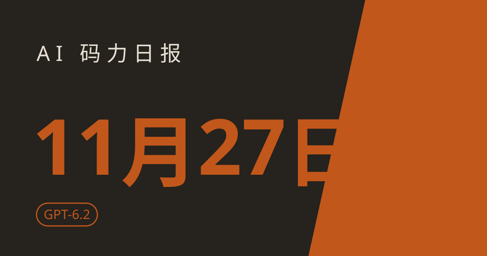

AI 码力日报 · 2026年11月27日

⚡ 一句话速览
- OpenAI 修了 GPT-6.2 的计费 bug：同样的工作，Astra 额度消耗多 40%、Sol 多 25%，Go/Plus/Pro/Business 每人补一次免费额度重置。
- Anthropic 把 Claude 署名的 VP≠VNP 证明挂上 GitHub：70 页论文加 Lean 形式化，但 README 自己写了"没人验过"。
- Google 的 Cogentic 一天发 6 篇论文：无条件次指数整数分解，HN 460 分；OpenAI 同日称矩阵乘法指数就是 9/4。
- 1Password 被黑：员工 GitHub 账号被盗，客户姓名邮箱泄露，密码库没动，接下来要防钓鱼邮件。
🤖 今日 AI Coding 动态
GPT-6.2 额度缩水了：Astra 快 40%、Sol 快 25%，OpenAI 补你一次免费重置
跟你有啥关系：如果你在 ChatGPT Work 或 Codex 里用 GPT-6.2 Astra/Sol 干活，从今天起同样的任务要多烧 40%/25% 的额度。OpenAI 产品负责人 Thibault Sottiaux 11 月 26 日在 X 上承认：GPT-6.2 上线时计费算错了，一直少算了 Astra 和 Sol 的用量，现在修好了，"同样的工作会占用更多额度"。好消息有两点：过去多用的部分不追收；Go、Plus、Pro、Business 每个账号补一次 banked reset——一次性额度重置，存在账号里、想用的时候再兑。12 月还有个更大的变化等着：ChatGPT 和 Codex 将共用一个按 token 计的额度池（昨天日报写过）。我的看法：这波最扎心的是"先给甜头再收回"——过去一周你按旧额度排的工作流，这周可能直接撞线，先去 Usage 设置里把那次免费重置领了再说。Notebookcheck 报道
Claude 写的 VP≠VNP 证明挂上 GitHub 了：70 页论文，没人验过
跟你有啥关系：上周还在吵黎曼猜想，这周 Anthropic 又往 GitHub 上挂了一个 Claude 署名的证明——Valiant 的 VP≠VNP 猜想，47 年的老问题。Anthropic 11 月 23 日左右在 formal-math 仓库的 vp-vnp 目录发布：70 页论文加 Lean 4 形式化（据 AI Weekly 统计约 324 个文件、7.3 万行），结论是哈密顿圈多项式等电路需要超过 m^(c (log m)^(1/3)) 个门。README 写得非常坦白："Both were written by AI models, and no human mathematician has checked the proof."（论文和形式化证明都是 AI 模型写的，没有数学家检查过。）它也明确说了：这不解决 P vs NP。提醒一句：OpenAI 11 月 23 日也发了自己的 VP≠VNP 版本（11 月 25 日日报社区栏提过），两家撞题了。我的看法：Lean 能验的是"证明自洽"，不是"定理表述没写错"——README 自己都划了这条线，先当重大进展看，别当定论转。CASRAI 报道
Google 的 Cogentic 一天发 6 篇论文：整数分解有了无条件次指数算法
跟你有啥关系：Google Research 11 月 25 日一口气挂出 6 篇论文，全是 Cogentic 的产出——Cogentic 是 Google 的"多 agent 自动证明发现"系统。最抓眼球的一篇是《无条件整数分解，时间 L_N[1/3, O(1)]》：次指数时间分解整数，不依赖任何未证明的假设。HN 460 分。但先泼一盆冷水：次指数不等于多项式，RSA 眼下还死不了，别被标题党带偏。Aaronson 在博客里把这波称为"奇点开端"；另一边，1979 年经典论文的作者 DeMillo 和 Lipton 回应说这是"数学生态的工业污染"。我的看法：吵架本身就是信号——AI 证明数学已经从"能不能"变成了"算不算"，这比任何一篇论文都重要。Agent Tools Today 日报
OpenAI 称矩阵乘法指数就是 9/4，多项式 Hirsch 猜想也被证伪了
跟你有啥关系：OpenAI 11 月 24 日版预印本连放两个重磅：矩阵乘法指数 ω 恰好等于 9/4——这是个下界，正好对上它 10 月 6 日证明的上界，困扰学界从 1960 年代末以来的谜底就此合拢，而且答案还是个有理数；另一篇证明简单多面体的图直径增长快于任何固定多项式，从而证伪了多项式 Hirsch 猜想。两篇都挂上 HN 首页，矩阵乘法那篇冲到 977 分登顶。提醒三句：第一，都是预印本加 Lean 证书，学界核验还在进行中；第二，Aaronson 兴奋到连写四声"HOLY SHIT"，但质疑声同样不小，Gary Marcus 还在转"证明无效"的说法；第三，这对你写代码没有直接影响，但它决定了未来几年"AI 能证明什么"的天花板。The Context 日报
DeepMind 给 Antigravity 装上质谱技能：轻量模型也能 97% 认出分子
跟你有啥关系：质谱分析这种"看图谱猜分子"的活，以前得靠专家加一堆脚本；DeepMind 11 月 25 日发布的 Mass Spec Skills 把 matchms、SIRIUS、MAGMa、MetFrag、RDKit 等开源工具和 GNPS、MoNA、PubChem 等谱库打包成技能，让 Antigravity 里的 agent 自己串起来用。数字很硬：在 100 个 Enamine REAL 化合物上，Gemini 3.8 Flash、Gemini 4 Argon、Gemini 4 Carbon 三个模型准确识别率都在约 97%——而不用技能时都不到 4%。更值得看的是成本：Flash 每个尝试的 token 数降了近 4 倍，Argon 降一半。我的看法：这才是"技能大于模型"最实在的证据——垂直领域里，给轻量模型配好工具，比堆一个更大模型划算得多。Darius 日报
1Password 被黑了：员工 GitHub 账号是入口，密码库没事、钓鱼邮件要来了
跟你有啥关系：你密码管理器本身被黑了——虽然你的密码没事。1Password 11 月 25 日披露：11 月 19 日发现入侵，攻击者盗了一名员工的企业 GitHub 账号，用它接触私有源码仓库、往后端服务里推恶意代码，下载了部分客户的姓名、登录邮箱、账号 ID、建号与最后登录时间、SRP 协议参数，以及邀请和找回链接里的 token。没被碰的东西：密码库内容、保护密码库的密钥、Secret Key——1Password 本来就不存你的账号密码。攻击者还拿到了部分私有源码、进了 CI/CD 系统，里面的基础设施密钥已轮换；邀请和恢复码也从 6 位数字加长到 10 位字符。提醒一句：被盗的姓名加邮箱是最经典的钓鱼原料，接下来几天收到"1Password 安全提醒"邮件先核对发件人，别点链接。TechCrunch 报道
腾讯 Hy4 flash 免费窗口只剩 3 天：224B 模型，WorkBuddy 免费、API 五折
跟你有啥关系：腾讯 11 月 16 日发布的 Hy4 flash——224B 参数 MoE、每 token 只激活 12B、1M 上下文——免费试用期到 11 月 30 日就结束了。WorkBuddy 里免费使用到 11 月 30 日，TokenHub 的 API 五折到 11 月 30 日 12:00（北京时间），之后恢复原价：输入约 0.07 美元、输出约 0.281 美元/每百万 tokens。腾讯自己的说法是单任务成本只有旗舰 Hy4 的 1/20，定位是日常办公活：调研、文档、做幻灯片、简单前端。开源权重已经上了 Hugging Face（tencent/Hy4-flash）。我的看法：12B 激活配 1M 上下文，这个规格当日常主力模型是够的——想试的这个周末就试，别拖到 30 号晚上。PR Newswire 通稿
🔧 工具更新日志
Claude Code 2.1.332：MCP 服务器能自带 skills 了，还有个能拦 shell 命令的新 hook
11 月 24 日发布（25 日推送），值得升的点有两个：第一，MCP 服务器现在能自带 skills（beta），连上服务器就自动出现在 / 菜单里、标成 server:skill，不用再往 ~/.claude/skills 里装；第二，新增 PreSkillShellCommand hook，能在 skill 或斜杠命令加载时拦下它的内联 shell 命令，以前只能等跑起来再抓。另外这一版修了 93 个 bug，大多是终端冻结、hook 输出撑爆上下文、MCP 输出刷屏这类"卡死"问题。提醒一句：auto 模式下 MCP skill 不经提示直接加载、由分类器决定放不放行——不放心的服务器，用 ask 或 deny 规则把 Skill(mcp__服务器名__*) 锁死再连。升级：claude update 或重装最新版。更新日志解读
OpenCode 2.4.2：网页抓取"全部放行"改成"仅限本站"，自动化失败也不停了
11 月 26 日发布，三个小改都挺实在：第一，网页抓取的"Always allow"以前是放行所有 URL，现在只允许当前这个站，误点外链不会一路放行；第二，自动化任务失败后继续跑，不会一个失败全停；第三，generate_image 和 generate_video 移进 Code Mode，定义不再往每个请求里塞约 700 tokens。升级：npm install -g opencode-ai@latest 后看一眼版本号是不是 2.4.2。Agent Tools Today 日报
💬 社区热议
Aaronson 连写四声"HOLY SHIT"：AI 数学大新闻，是"奇点开端"还是"工业污染"
谁在讨论：量子计算学家 Scott Aaronson 11 月 25 日发长文，HN 冲到 1028 分。核心观点：OpenAI 和 Anthropic 的 VP≠VNP 证明刚出来，OpenAI 又称矩阵乘法指数恰好是 9/4、还证伪了多项式 Hirsch 猜想——他说这就是"奇点开端"，P≠NP 的证明"不远了"，AI 正在打开"一片全新的数学真理大陆"。另一边，1979 年经典论文的作者 DeMillo 和 Lipton 回应：这是"数学生态的工业污染"。评论区吵的焦点是 Lean 证书到底算不算"证明"：Aaronson 认为带 Lean 证书的证明默认可信，除非有人拿出 Lean 本身的 bug；质疑方认为没人读得懂的证明不算数学。我的看法：两边说的其实不是一件事——一方在说"机器能找到真理"，另一方在说"人类还看不懂"，都对；看后续有没有人把这些证明讲成人话，比站队有意义。Aaronson 博文
1Password 事件 HN 1161 分：密码管理器被黑，讨论焦点是"员工 GitHub 账号怎么成了入口"
谁在讨论：1Password 安全事件披露后冲上 HN 首页第一，1161 分、496 条评论。核心观点：讽刺归讽刺，评论区问得最多的是两个技术问题——第一，一个员工 GitHub 账号被盗，怎么就能往后端服务推恶意代码，CI/CD 的权限边界去哪了；第二，1Password 说"密码库绝对安全"，但源码和 CI/CD 里的基础设施密钥都被访问过，轮换够不够彻底。也有人指出这事和 11 月 13 日 Cursor 的事故是同一类教训：供应商/员工账号泄露正在变成供应链攻击的标准入口。我的看法：对普通用户就是一句话——密码不用换，但钓鱼邮件要来了；对做 infra 的人，这是一次免费的"查自己 CI 权限"的提醒。HN 讨论
"多 agent 编程是未来"：一个人管 100 个 Claude，一天发 42 个 PR
谁在讨论：Patrick McKenzie（ patio11）11 月 24 日发长文，HN 55 分但文章分量很重。核心观点：多 agent 编程"和 LLM 会写代码一样，是范式转移"。他顾问的那家基金内部有个叫 Grimm 的编排器：2 到 100 多个 Claude 塞进一个 devbox，互相能对话、他通过网页看 tmux。他自己实测：一天发了 42 个 PR、8600 行改动、推理花了 823 美元，部署延迟砍了 80%——"可能是我职业生涯最高产的一天，而我感觉自己根本没干真正的活"。他还提到 Stripe 每周有数千个 PR 由 agent 写完合并。我的看法：重点不是 42 个 PR，是"管理 agent"正在变成新的编程——你写的不再是代码，是给一群 agent 的指令和验收标准。原文
Jev 疑似 Qwen3.5-35B-A3B 套壳：自报、tokenizer、延迟测试都对上了
谁在讨论：Modaic 11 月 25 日发文扒 TypeSafe 的 Jev 模型，HN 255 分。核心观点：TypeSafe 没披露 Jev（主打"校准判断"的 System One 模型）的底座，但自报身份、tokenizer 特征、吞吐测试"全都指向 Qwen3.5-35B-A3B"。Modaic 自己正在训的 Mo Lite 也是从这个模型衍生的，所以他们扒得格外细。我的看法：闭源模型被"指纹鉴定"会越来越常见——底座是谁正在变成一个可以实测的问题，厂商迟早得正面回答，与其等别人扒，不如自己先说。Modaic 原文
Show HN：用可证伪假设优化代码的 agent skill，冲到首页第 11 名
谁在讨论：算法工程教授 11 月 23 日发的 Show HN，HN 首页最高第 11 名、112 分。核心观点：他把算法工程里"设计—分析—实现—拿真实数据做实验"的可证伪假设循环做成了一个 agent skill，让 agent 无限循环跑：先提假设、再写代码验证、拿实验结果修正假设。示例报告里有完整 demo。评论区最热的点是"这玩意儿到底有什么用"——共识是：对性能敏感的代码（排序、图算法、数值计算）这种"先猜后验"的方法比让 agent 闷头改代码靠谱得多。我的看法：skill 的价值不在提示词写得多漂亮，在它把一个学科几十年的工作方法压缩成了一套 agent 能跑的循环——这才是 skill 该干的事。Show HN 讨论
🛠️ AI 应用新品
Bifura：让你看到 AI agent 眼中的网站
是什么：11 月 26 日 Product Hunt 第 4 名的新工具——输入你的网址，它展示 AI agent（搜索爬虫、AI 助手）看到的你的网站是什么样子。解决什么问题：AI 搜索正在抢走流量，但站长根本不知道爬虫读到了什么、漏掉了什么、结构化数据有没有被正确理解；Bifura 把"机器视角"可视化，缺什么补什么。免费额度：上榜页面没写具体定价，先去官网看免费档再决定。适合谁：自己有站、关心 AI 搜索收录的开发者和运营。我的看法：这期日报的读者基本都有自己的站或博客，花 5 分钟看一眼自己的站在 AI 眼里长什么样，值。Product Hunt 当日榜
🐑 今日羊毛
OpenAI 补的 banked reset 别忘了领：Go/Plus/Pro/Business 每人一次
一句话：GPT-6.2 计费 bug 的补偿——每个付费账号一次免费额度重置，存在账号里不用会一直留着。
- 怎么薅：网页端去 Usage 设置、桌面 App 去 Settings → Usage & billing 里兑换，一次性，用完即止。Notebookcheck 报道
- 有效期：一次性补偿（截至撰写时），别攒着不用
- 适合谁：ChatGPT Go、Plus、Pro、Business 的付费用户；提醒一句：免费版没有，别白跑一趟
OpenAI API 每日免费 tokens：开数据共享，每天最多 100 万/1000 万
一句话：OpenAI 给愿意共享流量的 API 账号每天发免费 tokens，不用绑卡、不用申请。
- 怎么薅：在 API 账号设置里开数据共享（data sharing），符合条件的账号每天能拿最多 100 万或 1000 万免费 tokens（看模型）；Perq 11 月 26 日刚对照官方页核实过。Perq 对比页
- 有效期：长期有效（截至撰写时），OpenAI 说停会提前 30 天通知
- 适合谁：已有 OpenAI API 账号、想低成本跑评测或 side project 的人；提醒一句：流量会共享给 OpenAI，账号还需要有正余额，敏感数据别往里送
Cerebras 新号送 $5 试用金：30 天，推理速度是卖点
一句话：Cerebras 注册就送 $5 一次性试用金，适合想试它家超快推理的人。
- 怎么薅：去 Cerebras 官网注册账号领 $5 试用金，需绑卡；aiforgeguide 11 月 24 日对照官方页核实过。免费额度汇总
- 有效期：30 天（截至撰写时），过期作废
- 适合谁：想试 Cerebras 推理速度、跑轻量任务的人；提醒一句：明确写着"别上生产"，就当个试用
⭐ 今日 GitHub 热门项目
pingdotgg/t3code：一个控制面，管你机器上装好的所有 coding agent
一句话介绍。解决什么问题：Claude Code、Codex、Cursor、Grok Build、OpenCode、Antigravity、fx 装了一堆，每个都有自己的界面和订阅——t3code 一个开源控制面全管起来，手机 App、网页、桌面端都能控，跑的是你自己的订阅。亮点：T3 团队出品，代码全开源，跑偏了自己 fork 就行。⭐ 约 8.0 万（截至撰写时；11 月 25 日单日新增 1809）。适合：agent 装了一堆、想一个入口全管的人；提醒一句：它不卖模型、不卖额度，管的是你已有的订阅，别指望它替你省钱。项目地址
morluto/rea：让 agent 逆向工程任意软件，没源码也能看
一句话介绍。解决什么问题：接手没文档的老项目、想摸清别人 App 怎么做，没源码就抓瞎——rea 让你的 coding agent 自己逆向：原生二进制走 Hopper 或 Ghidra，JS 和 Electron 应用、.NET 程序集、网站都能看，最后讲清某个功能怎么实现、证据是什么、结论的局限在哪。⭐ 约 47.9 万（截至撰写时；本周新增约 4.4 万）。适合：接手祖传代码、做竞品分析、想快速摸清一个陌生系统的人；提醒一句：它给的是"带证据的解释"，不是"保证正确的答案"，关键结论自己再验证一遍。项目地址
elementalsouls/Claude-BugHunter：把 Claude Code 变成挖洞搭档，83 个 skills
一句话介绍。解决什么问题：想让 agent 系统性挖自己项目的漏洞，光靠一句"帮我找 bug"不够——这个 skill 包给 Claude Code 装了 83 个 skills、16 个斜杠命令、681 个公开披露报告模式，覆盖 24 类核心漏洞，还有企业身份与基础设施攻击矩阵。⭐ 约 2.4 万（截至撰写时；本周新增约 5200）。适合：想给自己的项目做一次系统性安全自查的人；提醒一句：这是红队工具，拿去扫别人的站是违法的，别碰。项目地址
HKUDS/CLI-Anything：让任何软件都变成 agent 原生
一句话介绍。解决什么问题：你的 CLI 工具 agent 不会用——CLI-Anything 给任何 CLI 生成 skill 定义，让 Pi、OpenClaw、Cursor、Claude Code 这些 agent 都能直接调。亮点：11 月 26 日单日新增 1106 star，README 里那句"Make any software agent-ready"正在变成现实。⭐ 约 6.6 万（截至撰写时）。适合：自己维护 CLI 工具、想让 agent 顺手用起来的人；提醒一句：它生成的是 skill 定义，工具本身的权限边界还得你自己管。项目地址
🤗 Hugging Face 热门模型
Qwen/Qwen3.8-27B：27B 多模态模型，30 天下载约 650 万次
是什么：阿里 Qwen 的 27B dense 多模态模型，原生 26.2 万 tokens 上下文（可扩到 1M），11 月 21 日统计的 30 天下载量约 650 万次、HF 点赞超 2 万，是 11 月最热的开源模型之一。能干嘛：本地跑（GGUF 量化版 10GB 左右，11 月 25 日日报提过 NariQ 版）或 API 调，文本加视觉都行；Apache 2.0。下载量约 650 万次/30 天、点赞约 2 万（11 月 21 日第三方统计，截至撰写时可能更高）。适合谁：想本地跑个能打的多模态模型、又不想上 70B 的人。提醒一句：27B 全精度本地跑要 50GB 以上显存，笔记本先上 GGUF 量化版。模型地址
🛠️ 值得一试的工具：stablyai/orca——多 agent 并行，终于有个像样的管法
是什么：一个桌面 App，把 Claude Code、Codex、Grok 等 coding agent 跑在独立的 Git worktree 里：同一个任务派给多个 agent，各跑各的，完了并排对比 diff、挑最好的合并。解决什么痛点：多 agent 并行最烦的两件事——互相污染工作区、结果没法横向比——orca 一次都解决了；11 月 25 日单日新增 2231 star，是当天 GitHub 涨得最快的项目。免费额度：开源免费。
verdict：值得试——多 agent 编程这周刚被 McKenzie 吹上天，orca 是最快上手的姿势：不用换工作流，先拿一个小任务同时派给两个 agent，对比一次就知道值不值。项目地址
🎓 3 分钟小教程：用 orca 同时派 3 个 agent 做同一任务，横向对比再合并
前置条件：装好 orca 桌面 App；至少一个 coding agent 订阅（Claude Code 或 Codex）；一个 Git 仓库。
- 在 orca 里打开你的仓库，它会为每个 agent 建一个独立的 Git worktree，互相隔离。
- 同一个任务描述发给 3 个 agent（比如"给这个函数加缓存并补测试"），让它们各跑各的。
- 在 orca 里并排看 diff：实现思路、测试覆盖、代码风格一目了然。
- 挑最好的那份合并回主分支，其他 worktree 直接丢弃，不留垃圾。
预期效果：10 分钟拿到 3 份实现对比，不用再开 3 个终端手动建 worktree；agent 之间零干扰，选错了也不污染主分支。
🏆 本周 Top 5
- GPT-6.2 计费修复，Astra 额度 40% 更快见底，记得领一次免费重置——OpenAI 上线时少算了用量，现在修好了，付费用户每人补一次 banked reset。原文
- Anthropic 用 Claude 把 Messages API 重构成 Rust：CPU 降 70%、内存降 80%——今年最有说服力的"agent 写生产代码"案例，真正的教训是"验证 harness 才是决定成败的东西"。原文
- Claude 4.5 双模型退役倒计时：Sonnet 4.5 只剩 3 天了——11 月 30 日退役，先换 Sonnet 再换 Opus，新模型还便宜 20%。原文
- Aaronson：AI 数学大新闻是"奇点开端"，P≠NP 证明不远了——OpenAI 和 Anthropic 一周内连破多个几十年的数学难题，他说这就是奇点开始的样子。原文
- 1Password 被黑：员工 GitHub 账号是入口，密码库没事、钓鱼邮件要来了——密码不用换，但接下来几天"1Password 安全提醒"邮件先核对发件人再点。原文
数据截至撰写时，仅供参考。